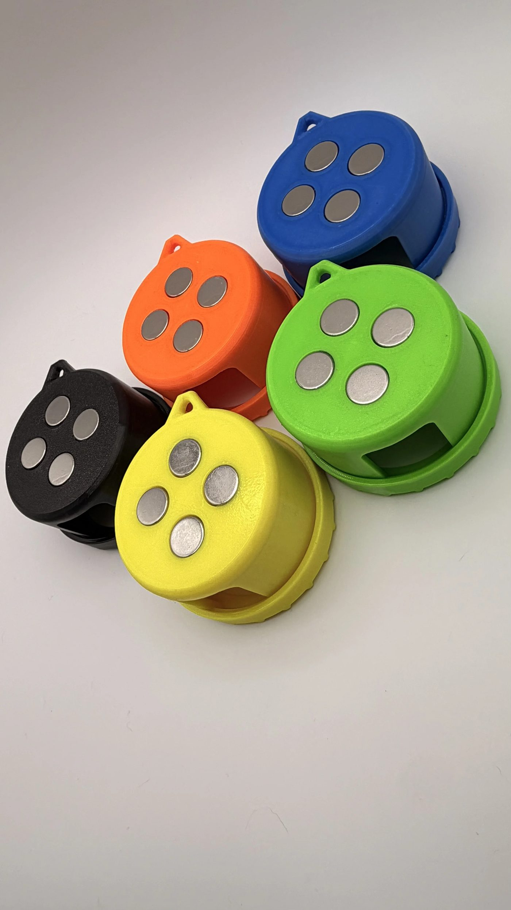
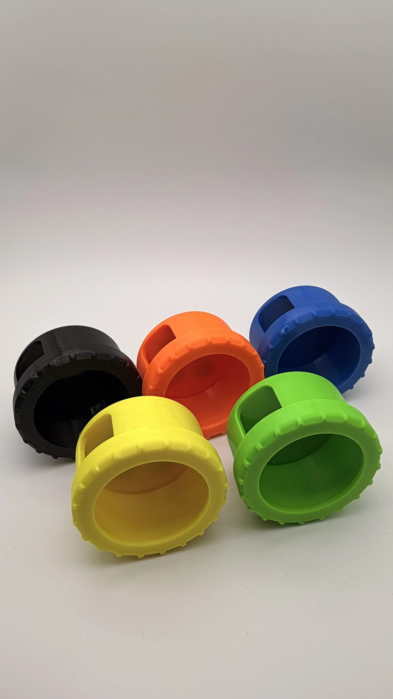
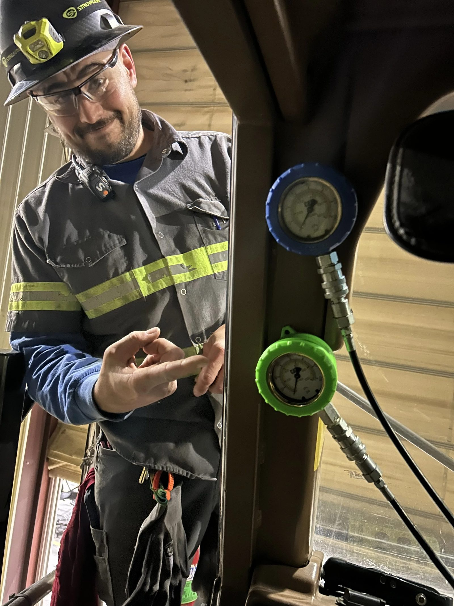

Magnetic · Color-Coded · Made to Order in Henderson, NV
Magnetic CAT Gauge Cases That Survive the Shop Floor
Four flush neodymium magnets lock your CAT pressure gauges to any steel surface—cab frames, ROPS posts, boom arms—through heavy vibration. Impact-absorbing TPU flexes with the drop so your gauge doesn't have to.
The Problem
A bare gauge rolls off the dash. Gets kicked across the shop floor. Gets crushed under a toolbox. And when four hoses run to four different lines, it's easy to grab the wrong gauge and waste ten minutes figuring out which pressure you're actually reading.
That's not a gauge problem. That's a case problem.
What's In the Case
Built to Take the Abuse Your Gauges Can't
Quad-Magnet Grip
4 flush-mounted neodymium magnets snap onto cab frames, ROPS posts, and boom arms—and stay there through heavy machine vibration.
Impact-Absorbing Shell
Flexible TPU soaks up shocks, drops, and shop-floor abuse instead of your gauge face.
Color-Coded, 5 Cases
Blue, Orange, Green, Yellow, Black—know which line you're reading before you even check the number.
Molded for a Perfect Fit
Shaped precisely for standard CAT diagnostic pressure gauges. No rattle, no play.
Quick-Disconnect Cutout
Hook up and read your pressure without pulling the case off.
Built-In Lanyard Loop
Hang it on a hook, a mirror, or your belt when a magnetic surface isn't handy.

4 neodymium magnets, embedded—not glued on

Cutout for quick-disconnect hose routing
Who It's For
Made for Diesel, Hydraulic, and Field Techs
Heavy equipment mechanics running CAT pressure gauges on excavators, dozers, loaders, and graders. Field service techs carrying gauges from machine to machine. Diesel and hydraulic guys who check pressure more than twice a year—and are done babying a bare gauge to keep it alive.

Pick Your Colors
5 Cases. Your Color Code.
Choose your own top and bottom color for each case in the form at checkout—set up a system that matches how you already work the lines: pilot, pump, steering, brake.
You'll choose your top and bottom colors in the form at checkout.
Why It Holds Up
Not Just Plastic and a Magnet
Material
TPU, not standard print plastic
Flexes to absorb impact instead of cracking. Holds up to brake clean and shop chemicals, and stays flexible in the cold instead of going brittle.
Magnets
Neodymium, flush-mounted
The strongest commercially available magnet—set into the case, not glued to the outside where it can shear off.
Build
Made to order in Henderson, NV
Built and checked by hand. I'm a mechanic-minded maker, not a factory—I built these because I needed them myself.
Questions
Gauge Case FAQ
What gauges does this fit?
Standard CAT diagnostic pressure gauges—each case is molded to fit snug with no rattle.
Will the magnets damage my equipment or mess with electronics?
No. They stick to steel surfaces—cab frames, ROPS posts, boom arms—without marking paint or metal. Just keep them away from sensitive electronics or magnetic-strip cards.
Can I pick my own colors?
Yes. Choose your top and bottom color for each case in the form at checkout—Blue, Orange, Green, Yellow, or Black.
Does $199 get me all 5 cases?
Yes—one order is 5 color-coded cases, each with your choice of top and bottom color.
How long until my order ships?
Every set is made to order in Henderson, NV. Check the product page at checkout for current turnaround.
Will it hold up in extreme heat or cold?
TPU stays flexible in the cold instead of cracking, and holds its shape in heat better than standard 3D-print plastic—built for real jobsite temps, not a climate-controlled shop.
Get a Gauge Case Set That Works as Hard as You Do
Magnetic CAT Gauge Case Set — $199
Order Your Set — $1995 color-coded cases · Made to order in Henderson, NV